Orientation#
Where are we now?
06 PREDICTIVE MODELING:
select an ML algorithm
train the ML model
- evaluate performance
make predictions
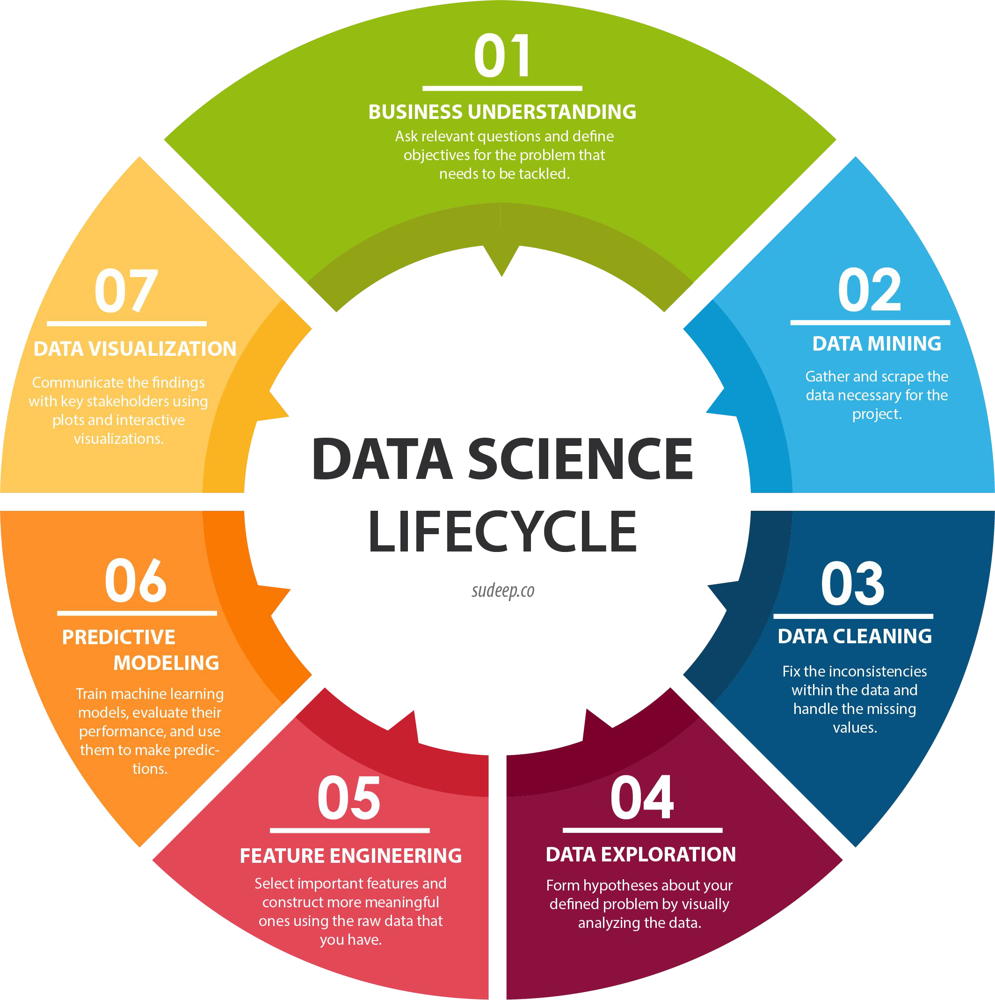
Evaluate Model Performance#
Regression metrics (R-squared, RMSE…)
Classification metrics (accuracy, precision, recall…)
Custom metrics
→ e.g., based on worst-case scenarios in your product
Short Recap on Regression Metrics#
Which Metrics Can We Use to Evaluate Model Performance?#
R2 (R-squared)
MSE (Mean Square Error)
RMSE (Root Mean Square Error)
MAPE (Mean Absolute Percentage Error)
Let’s Talk About Classification#
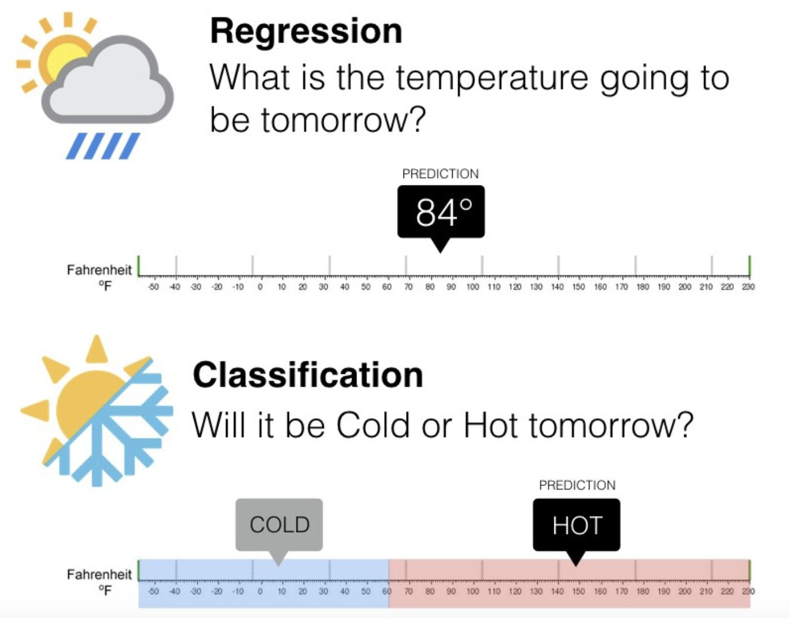
Confusion Matrix#
Counts how often the model predicted correctly and how often it got confused.
False Positive: false alarm / type I error
False Negative: missed detection / type II error
| Predicted | |||
|---|---|---|---|
| Negatives | Positives | ||
| Actual | Negatives | TN | FP |
| Positives | FN | TP | |
Accuracy#
How often the model is right.
| Predicted | |||
|---|---|---|---|
| Negatives | Positives | ||
| Actual | Negatives | TN | FP |
| Positives | FN | TP | |
Drawbacks#
When one class is very rare, it can lead to false conclusions.
Here, accuracy is 94%.
But 5 out of 6 positives were predicted incorrectly.
| Predicted | |||
|---|---|---|---|
| Negatives | Positives | ||
| Actual | Negatives | 93 | 1 |
| Positives | 5 | 1 | |
Accuracy Might Not Be Good Enough#
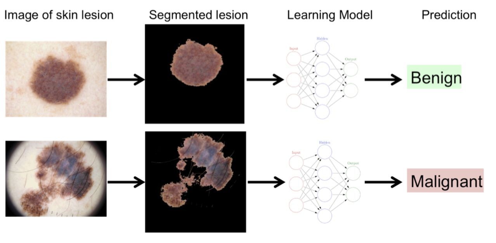
Precision and Recall#
Focus on the positive class
The number of true negatives is not taken into account
Useful when trying to detect a rare event
The number of negatives is very large
What Proportion of Actual Positives Was Predicted Correctly?#
The TPR is also called sensitivity or recall.
Here, the true positive rate is 1/6 (~16.67%).
| Predicted | |||
|---|---|---|---|
| Negatives | Positives | ||
| Actual | Negatives | 93 | 1 |
| Positives | 5 | 1 | |
Tweaking the Model#
Every model has a threshold that separates positive from negative predictions.
Typically, instances are predicted as positive if the probability is \(\geq\) 0.5.
| Predicted | |||
|---|---|---|---|
| Negatives | Positives | ||
| Actual | Negatives | 93 | 1 |
| Positives | 5 | 1 | |
Tweaking the Model#
The lower the threshold, the more instances are predicted as positive.
This automatically raises the true positive rate (TPR), also called recall.
| Predicted | |||
|---|---|---|---|
| Negatives | Positives | ||
| Actual | Negatives | 14 | 80 |
| Positives | 0 | 6 | |
After Tweaking the Model#
After tweaking, the true positive rate (TPR) is 100%.
But are we entirely happy?
| Predicted | |||
|---|---|---|---|
| Negatives | Positives | ||
| Actual | Negatives | 93 | 1 |
| Positives | 5 | 1 | |
| Predicted | |||
|---|---|---|---|
| Negatives | Positives | ||
| Actual | Negatives | 14 | 80 |
| Positives | 0 | 6 | |
What Proportion of Positive Predictions Is Actually Correct?#
Precision is 6/86 (~6.97%), which is even lower than recall before tweaking.
Whether this is acceptable depends on the business case.
For cancer screening, this might be acceptable to stakeholders.
→ Still, screening millions of people can be very expensive.
| Predicted | |||
|---|---|---|---|
| Negatives | Positives | ||
| Actual | Negatives | 14 | 80 |
| Positives | 0 | 6 | |
Summary#
\(N_+\) : actual positives \ \(N_-\) : actual negatives \ \(\hat{N}_+\) : predicted positives \ \(\hat{N}_-\) : predicted negatives \ n = # observations
| Predicted | ||||
|---|---|---|---|---|
| Negatives / 0 | Positives / 1 | ∑ | ||
| Actual | Negatives / 0 | TN | FP | $N_-$ = TN + FP |
| Positives / 1 | FN | TP | $N_+$ = TP + FN | |
| ∑ | $\hat{N}_-$ = TN + FN | $\hat{N}_+$ = TP + FP | n = TP + FP + FN + TN | |
Precision-Recall Curve#
Plots Precision vs. Recall depending on the threshold.
If threshold is high:
→ Precision is close to 1.
→ Recall will be very low.
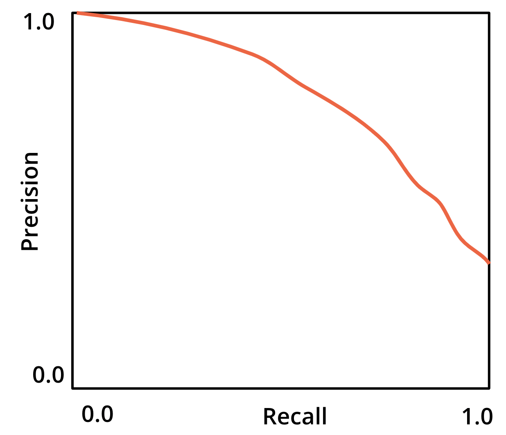
Precision-Recall Curve#
If threshold is effectively zero:
→ Predicting all instances as positives.
→ Recall will be 1.
→ Precision is equal to the share of positives.Goal: Choose a threshold that stakeholders agree on based on cost-benefit trade-offs.
Starting point: estimate expected economic benefit and operational cost.
F1-Score#
The harmonic mean of precision and recall
Here, the F1-score is 13.08%
\(F_1 = 2\cdot\frac{Precision\;\cdot\;Recall}{Precision\;+\;Recall}\)
\(F_1 = 2\cdot\frac{7\cdot100}{7+100}=13.08\%\)
| Predicted | |||
|---|---|---|---|
| Negatives | Positives | ||
| Actual | Negatives | 14 | 80 |
| Positives | 0 | 6 | |
F1-Score#
The harmonic mean punishes low rates.
\(F_1 = 2\cdot\frac{Precision\;\cdot\;Recall}{Precision\;+\;Recall}\)
| Precision | Recall | F1-Score |
|---|---|---|
| 5% | 50% | 9% |
| 90% | 90% | 90% |
| 30% | 60% | 40% |
Let’s Take Negatives into the Equation#
The amount of correct negative predictions is sometimes just as important.
Spam vs. ham is one common example (email spam detection).
What Proportion of Actual Negatives Was Predicted as Positives?#
False Positive Rate (FPR)
Here, FPR is: \(\frac{80}{80+14} = 85.11\%\)
\(\mathrm{FPR}=\frac{FP}{TN+FP}\)
| Predicted | |||
|---|---|---|---|
| Negatives | Positives | ||
| Actual | Negatives | 14 | 80 |
| Positives | 0 | 6 | |
What Proportion of Actual Negatives Was Predicted Correctly?#
True Negative Rate (TNR), also called specificity
Here, TNR is: \(\frac{14}{80+14} = 14.89\%\)
FPR = 1 - specificity
| Predicted | |||
|---|---|---|---|
| Negatives | Positives | ||
| Actual | Negatives | 14 | 80 |
| Positives | 0 | 6 | |
Receiver Operating Characteristic (ROC) Curve#
TPR vs. FPR plotted for different thresholds
The 45° line is equivalent to random guessing.
If all positives are correctly predicted and no negatives are incorrectly predicted, the ROC curve would follow the green path.
Aim: move the ROC curve as close as possible to (0,1).
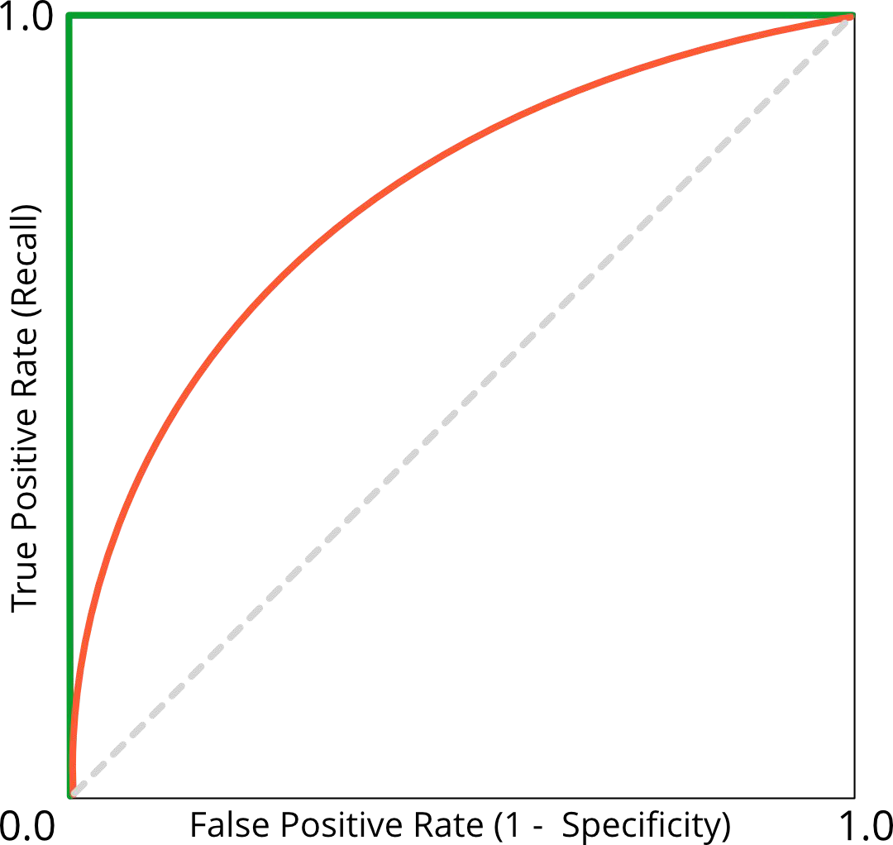
ROC and the Area Under the Curve (ROC AUC)#
Metric to compare different classifiers
Random classifier:
→ ROC AUC is 0.5
→ ROC curve is on the 45° linePerfect classifier:
→ ROC AUC is 1
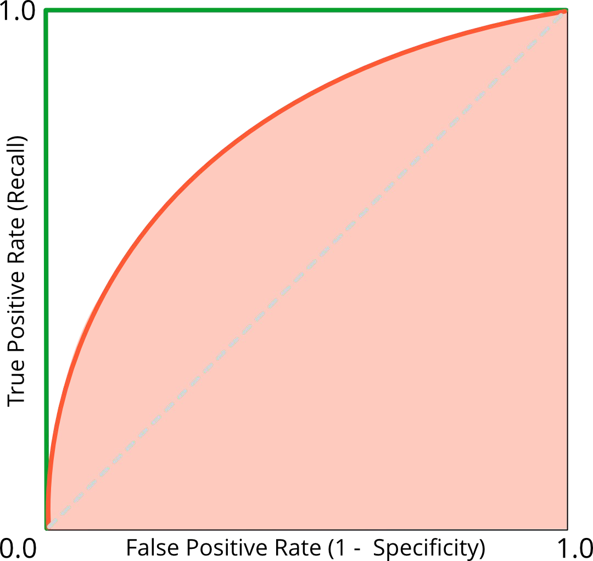
Explanation of ROC Curve#
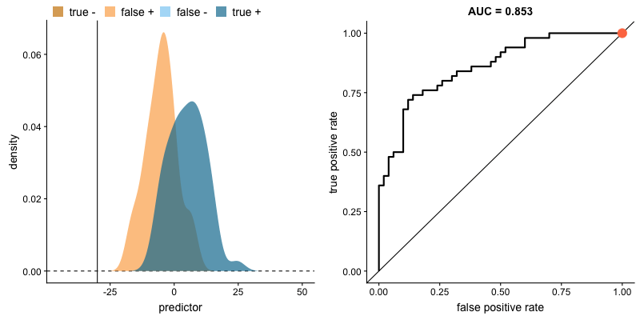
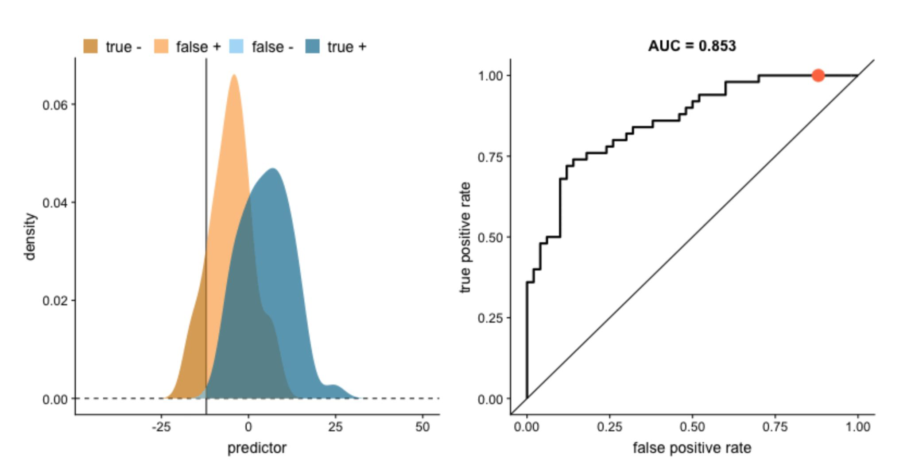
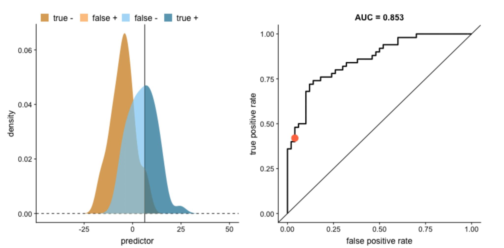
Explanation of ROC Curve#
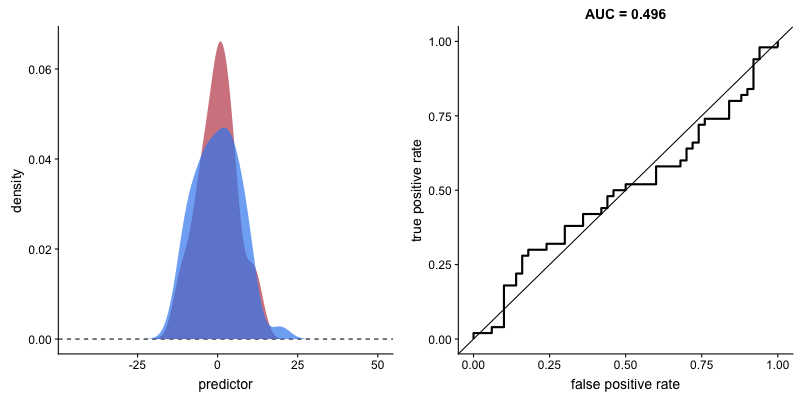
Imbalanced Classes#
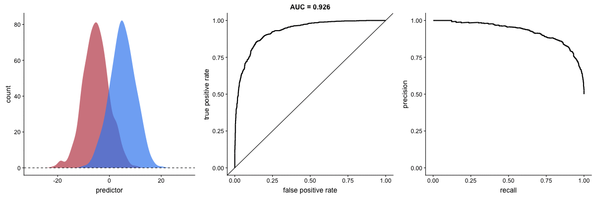
Going Beyond Aggregated Metrics#
All the performance metrics we have seen today are aggregated metrics.
They help determine whether a model has learned well from a dataset or needs improvement.
Next step:
Examine results and errors to understand why and how the model is failing or succeeding.
Why: validation and iteration
Validate Your Model → Inspect How It Performs#
There are many ways to do this. The goal is to compare your model’s predictions with the actual data (targets and/or features).
Regression:
Examine residuals, perform exploratory data analysis (EDA), and look for patterns or outliers.
Classification:
Start with a confusion matrix to analyze how well predicted classes match true classes.
Product Goal → Metric Choice (Quick Guide)#
Use one primary metric for decisions and one or two guardrails to control risk.
PR AUC = area under the precision-recall curve. It summarizes precision-recall trade-offs across thresholds and is especially informative when the positive class is rare.
FNR = false negative rate, the share of actual positives the model misses.
Product goal |
Primary metric |
Guardrail metric(s) |
Why this works |
|---|---|---|---|
Catch as many true cases as possible (e.g., fraud/cancer pre-screening) |
Recall (TPR) |
Precision, FPR |
Maximizes detection while controlling false alarms |
Avoid false alarms (e.g., spam filter for important inboxes) |
Precision |
Recall, FNR |
Keeps positive predictions trustworthy |
Balance misses and false alarms when both matter |
F1-score |
Precision, Recall |
Single score balancing both error types |
Compare classifier ranking quality across thresholds |
ROC AUC and, when positives are rare, PR AUC as a complementary view |
Chosen operating threshold, class balance context |
Good for model comparison before threshold selection |
Communicate baseline classification performance quickly |
Accuracy |
Class balance check, Recall |
Simple, but only meaningful when classes are not highly imbalanced |
Regression forecast quality in original units |
RMSE |
MAPE, error-by-segment |
RMSE is interpretable in target units and penalizes large errors. Use MAPE cautiously when true values can be near zero, because percentage errors become unstable. |
Choosing Metrics for Product Decisions (Wrap-up)#
Business objective: Define the outcome to optimize (e.g., catch fraud, reduce churn).
Primary metric: Pick one decision metric (e.g., Recall at threshold, PR AUC, RMSE).
Guardrail metric(s): Add metrics that prevent harmful trade-offs (e.g., precision, FPR, review cost).
Threshold policy: Set and revisit thresholds based on estimated benefit vs. cost.
Resources#
roc-auc-precision-and-recall-visually-explained
Building Machine Learning Powered Applications - Emmanuel Ameisen